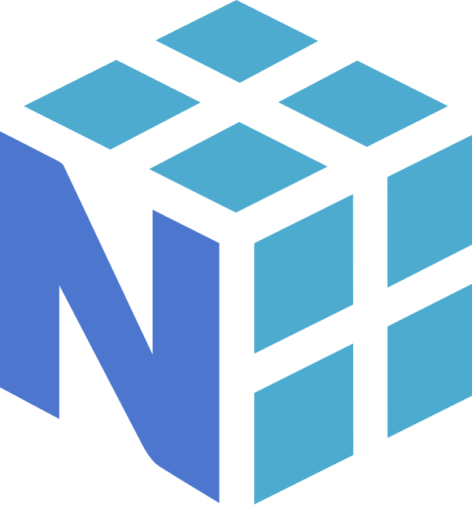

MSc Data Science
Birkbeck, University of London
2020
Trained as a mathematician, I discovered a passion for data science and machine learning after graduating and went on to complete my MSc in Data Science. My undergraduate years also took me through philosophy and deep dives into neurobiology and those passions have never left me. I am fascinated by how experience, memory, and cognition work in biological systems, and equally fascinated by how those mechanisms can inspire and inform the design of computer systems and artificial intelligence.
Since then I have built a career around turning data into tangible business value — whether that means shipping internal tools that let teams move faster, building predictive models that improve the ROI of investments like marketing and customer acquisition, or conducting deep strategic analysis that gives leadership a clearer picture of their customers and business.
I am driven by the full breadth of data work: from designing scalable ML pipelines and survival models to crafting interactive dashboards and web applications. I enjoy building things that people actually use, and I take pride in making complex outputs accessible and actionable. Beyond data, I have a genuine enthusiasm for web development and enjoy bringing the disciplines together to create polished, self-serve products.
AI is a genuine passion of mine — spanning large language models, computer vision, and robotics — and I regularly explore these areas through personal projects in my own time. A central theme across all of this work is enabling AI in an intelligent, considered way: integrating copilots and automation tools to meaningfully accelerate productivity, while always keeping the human in the loop. I believe the most effective AI strategy is one that amplifies human judgement rather than replacing it, and I actively champion that philosophy within the teams I work with.



Birkbeck, University of London
2020
West Virginia University
2013
Framingham, MA & London, UK
Data Science Manager
March 2026 – Present · Framingham, MA
Leading a small team comprising a Data Scientist and Data Engineer to deliver data science and AI solutions across the US Consumer business, while continuing to support European operations. Guiding the team in adopting modern data tooling and ways of working, enabling effective use of platforms including Databricks, Snowflake, Streamlit, GitHub, and GitHub Copilot to accelerate development and improve operational efficiency. Partnering with a wide range of business functions to support their shift toward automation and AI — replacing legacy systems and processes with faster, more scalable solutions. Established and championed an AI strategy and framework for ways of working going forward, while actively training and upskilling the team across a broad range of data science techniques and technologies.
Data Scientist
June 2025 – March 2026 · Framingham, MA
Working on the US Consumer Business and Insights team while continuing to support the European offices, delivering data science solutions across both markets. Built and deployed models spanning product scoring, first-year sales store predictors, and customer lifetime value to drive strategic business decisions. Developed and integrated AI tools to enhance team workflows, introduced automation tooling to improve operational efficiency, and contributed to defining the company's AI strategy and ways of working moving forward. Actively trained and upskilled team members across a range of data science techniques and technologies.
Data Scientist — TJX Europe
January 2023 – June 2025 · London, UK
Working on the customer insights team to analyze and build models focused on understanding the customer base. Working within the Marketing department and communicating with a wide range of teams to implement predictive models for better business decision making. Leveraging various tools like Snowflake, Databricks and PowerBI for creating and monitoring large data pipelines and machine learning models. Working with outside vendors to test their cutting edge technologies that might bring in business value for the company. Creating numerous proof of concept projects for research and development within the company. Mentoring various members of the team to upskill and develop across a wide range of skills and technologies.
London, England
Data Tutor
June 2022 – December 2023
Working in the Product team to develop modules for the level 3 and level 4 data apprenticeship program, along with working on commercial content for the advanced academy. Delivering high quality data-centric workshops to various clients from multiple industries. Running a learner help desk to address all technical questions that clients might have while developing internal data projects for business insights.
Senior Data Mentor
January 2022 – June 2022
Working with the Content and Technology teams on projects related to automation to improve processes within the business and the development of material for the product team. Mentoring learners across multiple industries while they complete the level 4 Data Analyst Apprenticeship program over an 18 month period. Guiding learners to develop robust and impactful data science projects for their organisations.
Data Mentor
May 2021 – January 2022
Overseeing the learning progression of multiple learners from various organisations. Guiding learners through the level 4 Data Analyst Apprenticeship program over 18 months. Critiquing and providing feedback on data driven projects across multiple industries. Providing help on various data tools such as Anaconda, Jupyter Notebook, Python and SQL. Helping learners understand various data science techniques such as Clustering, Regression, Neural Networks, Time series analysis, Classification, and Text analysis.
Alexandria, VA
Mathematics Teacher
Preparing and managing lessons for all levels of secondary mathematics and statistics. Directing an instructional assistant to help manage the students, along with designing interactive and engaging projects for my students to develop applicable skills for their future. Collecting, cleaning, and presenting data in the form of academic achievements to present to my principal directly. Nominated for Outstanding New Teacher Award 2018.
Alexandria, VA
Bartender and Server
Creating a relaxing and comfortable environment for customers, while allowing relevant information sharing between management and kitchen staff. Offering a detailed analysis of food, drinks, ingredients, specials, and possible pairings. Developing personal and professional relationships with patrons and staff alike.
Surat Thani, Thailand
Math and Science Teacher
Developing and executing lesson plans for large class sizes for students who learned English as a second language. Curating yearlong projects with students and designing extracurricular activities for all age groups.
Alexandria, VA
Waiter
Providing patrons with daily specials and keeping them informed on ingredients and menu items. Keeping a constant line of communication going between bar staff, management, kitchen staff and customers.
Alexandria, VA
Instructional Assistant
Assisting in the mathematics and biology classrooms with lectures, personal tutoring, and generally answering questions for students.
Alexandria, VA
Bartender and Server
Mixed and served alcoholic and nonalcoholic drinks to patrons of bar, following standard recipes. Served wine and draught or bottled beer, utilizing interpersonal communication and public relations skills.
Morgantown, WV
Research Assistant
Working in a biological modeling lab focused on flowcytometry research. Establishing pipetting skills and expanding analysis intelligence on large sums of data using Excel and MATLAB.
Durgapur, India
Research Assistant
Industrial-agricultural research project designed to discover the advantages of certain species of rice in this geographic region. Assisted with data collection and crop yield analyses.
Chiang Mai, Thailand
Research Assistant
Industrial-agricultural research project designed to discover the advantages of certain species of rice in this geographic region. Assisted with data collection and crop yield analyses.